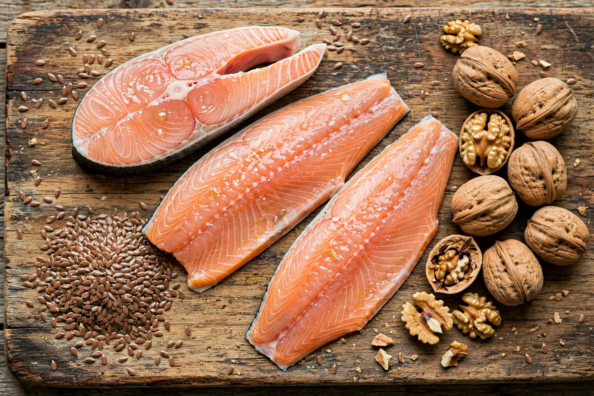

Omega-3 fatty acid
| Omega-3 fatty acid | |
| Class | Polyunsaturated fatty acids |
|---|---|
| Principal members | α-Linolenic acid (ALA), eicosapentaenoic acid (EPA), docosahexaenoic acid (DHA) |
| Main sources | Oily fish, algae, flaxseed, walnuts, chia seeds |
| Essential in humans | ALA (precursor for EPA and DHA) |

Omega-3 fatty acids (also written ω-3 fatty acids or n-3 fatty acids) are polyunsaturated fatty acids characterized by a carbon–carbon double bond three atoms away from the terminal methyl group of the chain. They are widely distributed in nature and form an important part of animal lipid metabolism.
Chemistry
The "omega-3" designation counts from the methyl (omega) end of the fatty-acid chain: the first double bond appears between the third and fourth carbon atoms. The most important omega-3 fatty acids in human nutrition are α-linolenic acid (ALA, 18:3), eicosapentaenoic acid (EPA, 20:5) and docosahexaenoic acid (DHA, 22:6).
Dietary sources
ALA occurs in plant oils such as flaxseed (linseed), soybean and canola oil, and in walnuts and chia seeds. EPA and DHA occur mainly in oily fish — salmon, mackerel, sardines, anchovies and herring — and in krill and marine algae, the ultimate source of the EPA and DHA accumulated by fish. Humans can convert ALA to EPA and DHA only inefficiently, so direct dietary intake of preformed EPA and DHA is often recommended.
Health effects
Omega-3 fatty acids are associated in the scientific literature with modest reductions in blood triglycerides, and DHA is a major structural component of the brain and retina. Evidence for benefits in cardiovascular disease, depression and dementia is mixed, and major health authorities regard routine fish-oil supplementation as having at most small benefits for the general population. The FDA permits qualified health claims linking EPA and DHA consumption to reduced risk of hypertension and coronary heart disease.
History of research
Interest in omega-3s grew from epidemiological studies in the 1970s of Greenland Inuit populations, whose traditional diet was rich in marine fats yet who appeared to have low rates of certain heart diseases — observations later qualified by subsequent research.